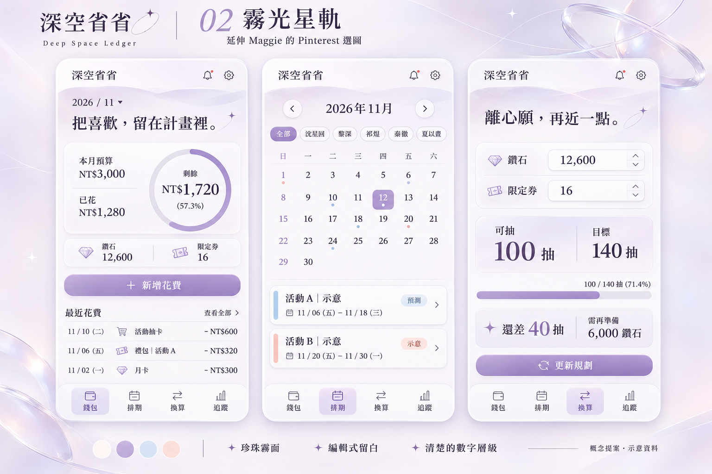
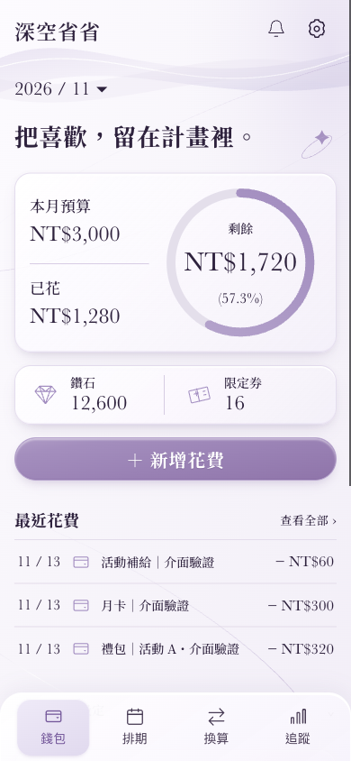
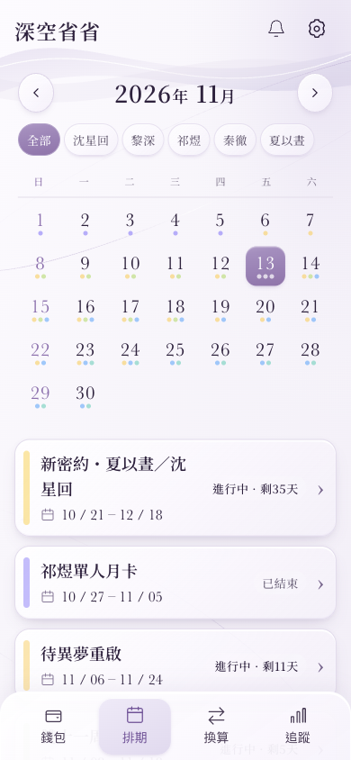
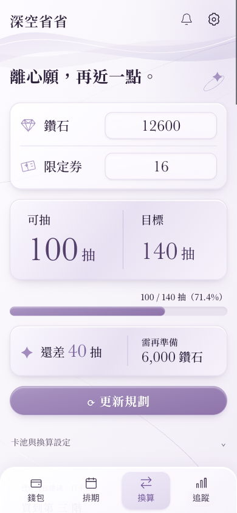

<!doctype html>
<html lang="zh-Hant"><meta charset="utf-8"><meta name="viewport" content="width=device-width,initial-scale=1"><title>02A 原圖與實作對照</title>
<style>
*{box-sizing:border-box}body{margin:0;background:#f6f2fa;color:#30213f;font:16px/1.7 "Songti TC","Noto Serif TC",serif}main{max-width:1280px;margin:auto;padding:36px 24px}h1{font-size:30px;margin:0}p{color:#72617f;margin:8px 0 24px}details{margin-bottom:30px;padding:16px 20px;background:#fff9;border:1px solid #e2d7ec;border-radius:20px}summary{cursor:pointer;font-size:18px}details img{display:block;width:100%;margin-top:16px;border-radius:12px}.screens{display:grid;grid-template-columns:repeat(3,minmax(0,1fr));gap:24px}figure{margin:0}figcaption{display:flex;justify-content:space-between;align-items:center;margin-bottom:12px;font-size:20px}small{font-size:13px;color:#806b91}.screens img{display:block;width:100%;border:2px solid #fff;border-radius:24px;box-shadow:0 12px 28px -14px #70548b66}footer{margin-top:28px;color:#72617f;font-size:14px}a{color:#80639f}@media(max-width:760px){.screens{grid-template-columns:1fr;max-width:390px;margin:auto}main{padding:24px 16px}}
</style>
<main><h1>02A 霧光星軌・原版</h1><p>依指定原圖修正後的實際畫面。卡片、按鈕、波帶、星軌與主要資訊順序一併對照。</p><details><summary>展開指定參考圖</summary></details><div class="screens"><figure><figcaption>錢包 <small>390 × 844</small></figcaption></figure><figure><figcaption>排期 <small>390 × 844</small></figcaption></figure><figure><figcaption>換算 <small>390 × 844</small></figcaption></figure></div><footer>以上為 App Web renderer，非 iPhone 實機截圖。錢包與換算使用隔離測試資料，排期保留真實來源；原網站與 TestFlight 均未發布。<br><a href="README.md">查看其他畫面與驗證範圍</a></footer></main></html>
